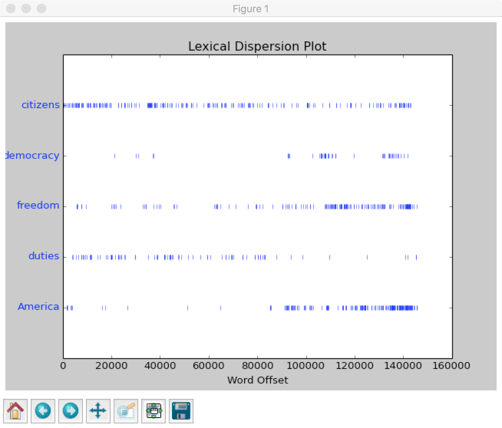
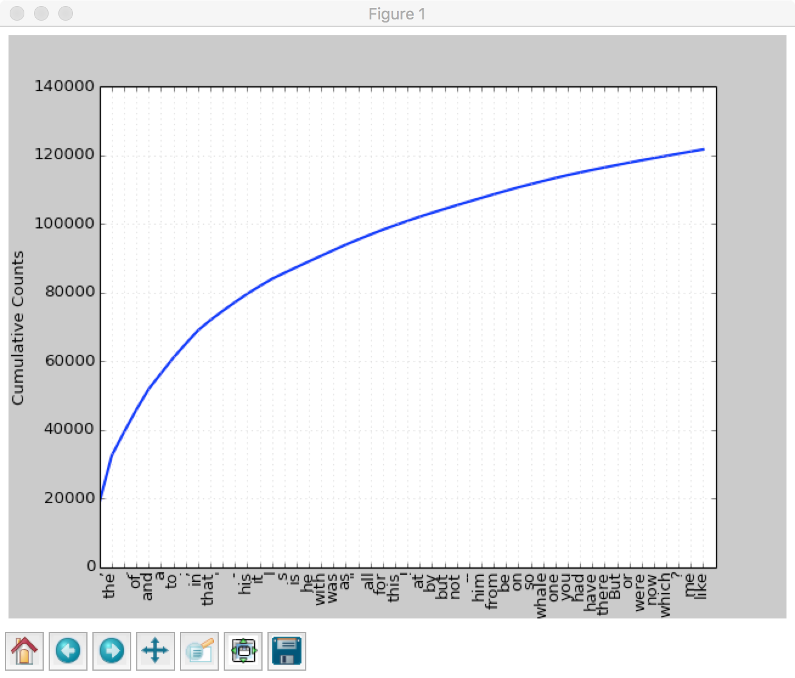
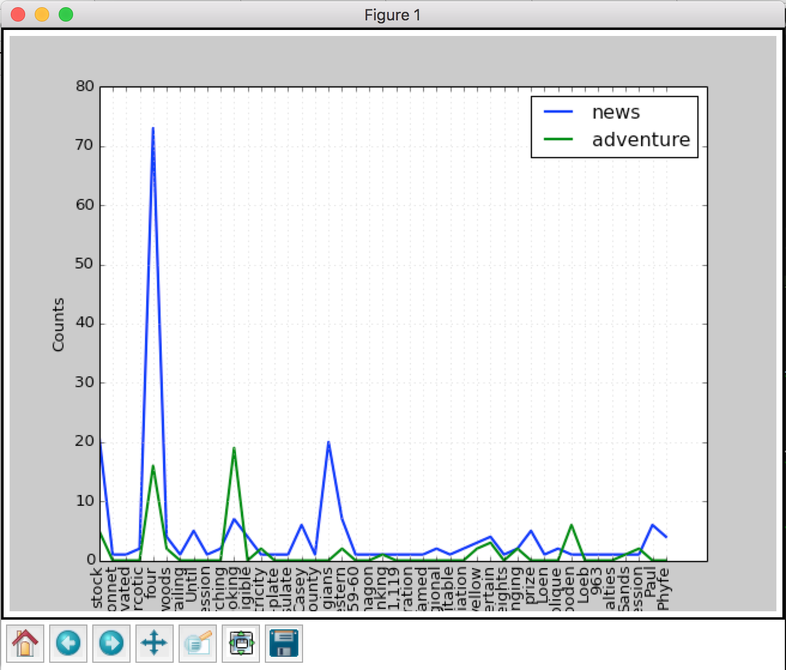

网上找了篇看起来挺丰富的文章自己动手做聊天机器人,学着做QA,
来源网站:shareditor
book的下载地址来自于:解决NLTK包下载出错问题及NLP环境测试
NLTK:Natural Language Toolkit
NLTK库
安装
1 | # 老样子,切换到ENV环境装 |
资源下载地址:
下载地址1：云盘密码znx7
下载地址2：云盘密码4cp3
来源:
解决NLTK包下载出错问题及NLP环境测试
1 | import nltk |
到这里为止,环境安装工作完成
搜索
1 | text1.concordance("former") |
会显示20个包含former的语句上下文
我们还可以搜索相关词，比如：
输入了ship，查找了boat，都是近义词
1 | text1.similar("ship") |
输入了ship，查找了boat，都是近义词
我们还可以查看某个词在文章里出现的位置：
1 | # 跑了一遍发现缺少包所以报错,这里需要安装matplotlib |
1 | text4.dispersion_plot(["citizens", "democracy", "freedom", "duties", "America"]) |
跑出来应该是下面这个样子
词统计
- len(text1):返回总字数
- set(text1):返回文本的所有词集合
- len(set(text4)):返回文本总词数
- text4.count(“is”):返回“is”这个词出现的总次数
- FreqDist(text1):统计文章的词频并按从大到小排序存到一个列表里
- fdist1 = FreqDist(text1);fdist1.plot(50, cumulative=True):统计词频，并输出累计图像
- fdist1.hapaxes():返回只出现一次的词
- text4.collocations():频繁的双联词
自然语言处理关键点(照抄章节)
词意理解：中国队大胜美国队；中国队大败美国队。“胜”、“败”一对反义词，却表达同样的意思：中国赢了，美国输了。这需要机器能够自动分析出谁胜谁负
自动生成语言：自动生成语言基于语言的自动理解，不理解就无法自动生成
机器翻译：现在机器翻译已经很多了，但是还很难达到最佳，比如我们把中文翻译成英文，再翻译成中文，再翻译成英文，来回10轮，发现和最初差别还是非常大的。
人机对话：这也是我们想做到的最终目标，这里有一个叫做“图灵测试”的方式，也就是在5分钟之内回答提出问题的30%即通过，能通过则认为有智能了。
自然语言处理分两派，一派是基于规则的，也就是完全从语法句法等出发，按照语言的规则来分析和处理，这在上个世纪经历了很多年的试验宣告失败，因为规则太多太多，而且很多语言都不按套路出牌，想象你追赶你的影子，你跑的快他跑的更快，你永远都追不上它。另一派是基于统计的，也就是收集大量的语料数据，通过统计学习的方式来理解语言，这在当代越来越受重视而且已经成为趋势，因为随着硬件技术的发展，大数据存储和计算已经不是问题，无论有什么样的规则，语言都是有统计规律的，当然基于统计也存在缺陷，那就是“小概率事件总是不会发生的”导致总有一些问题解决不了。
到此为止的理解,NLTK就如字面意思,其实是一个toolkit,提供了很多现成的算法类的工具
语料与词汇资源
当代自然语言处理都是基于统计的，统计自然需要很多样本，因此语料和词汇资源是必不可少的，本节介绍语料和词汇资源的重要性和获取方式
NLTK语料库
Gutenberg语料库
1 | # 返回Gutenberg语料库的文件标识符 |
nltk.corpus.gutenberg就是gutenberg语料库的阅读器，它有很多实用的方法，比如：
- nltk.corpus.gutenberg.raw(‘chesterton-brown.txt’)：输出chesterton-brown.txt文章的原始内容
- nltk.corpus.gutenberg.words(‘chesterton-brown.txt’)：输出chesterton-brown.txt文章的单词列表
- nltk.corpus.gutenberg.sents(‘chesterton-brown.txt’)：输出chesterton-brown.txt文章的句子列表
类似的语料库还有：
- from nltk.corpus import webtext：网络文本语料库，网络和聊天文本
- from nltk.corpus import brown：布朗语料库，按照文本分类好的500个不同来源的文本
- from nltk.corpus import reuters：路透社语料库，1万多个新闻文档
- from nltk.corpus import inaugural：就职演说语料库，55个总统的演说
语料库的一般结构
以上各种语料库都是分别建立的，因此会稍有一些区别，但是不外乎以下几种组织结构：散养式（孤立的多篇文章）、分类式（按照类别组织，相互之间没有交集）、交叉式（一篇文章可能属于多个类）、渐变式（语法随着时间发生变化）
语料库的通用接口
- fileids()：返回语料库中的文件
- categories()：返回语料库中的分类
- raw()：返回语料库的原始内容
- words()：返回语料库中的词汇
- sents()：返回语料库句子
- abspath()：指定文件在磁盘上的位置
- open()：打开语料库的文件流
加载自己的语料库
收集自己的语料文件（文本文件）到某路径下（比如/tmp)，然后执行：
1 | from nltk.corpus import PlaintextCorpusReader |
就可以列出自己语料库的各个文件了，也可以使用如wordlists.sents(‘a.txt’)和wordlists.words(‘a.txt’)等方法来获取句子和词信息
条件频率分布
条件分布大家都比较熟悉了，就是在一定条件下某个事件的概率分布。自然语言的条件频率分布就是指定条件下某个事件的频率分布。
比如要输出在布朗语料库中每个类别条件下每个词的概率：
1 | # coding:utf-8 |

注意：这里如果把plot直接换成tabulate ，那么就是输出表格形式，和图像表达的意思相同
我们还可以利用条件频率分布，按照最大条件概率生成双连词，最终生成一个随机文本
这可以直接使用bigrams()函数，它的功能是生成词对链表。
创建python文件如下：
1 | # coding:utf-8 |
执行效果如下：
1 | the land of the land of the land of the |
the的最大概率的双连词是land，land最大概率双连词是of，of最大概率双连词是the，所以后面就循环了
其他词典资源
有一些仅是词或短语以及一些相关信息的集合，叫做词典资源。
- 词汇列表语料库：nltk.corpus.words.words()，所有英文单词，这个可以用来识别语法错误
- 停用词语料库：nltk.corpus.stopwords.words，用来识别那些最频繁出现的没有意义的词
- 发音词典：nltk.corpus.cmudict.dict()，用来输出每个英文单词的发音
- 比较词表：nltk.corpus.swadesh，多种语言核心200多个词的对照，可以作为语言翻译的基础
- 同义词集：WordNet，面向语义的英语词典，由同义词集组成，并组织成一个网络